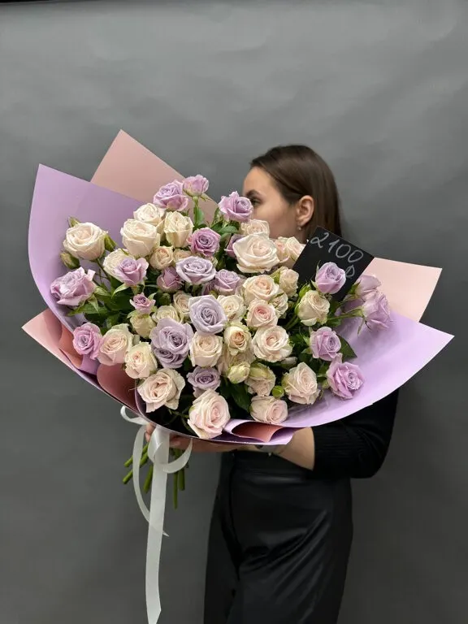
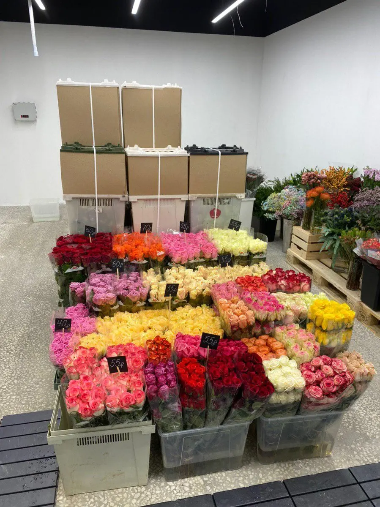

Цветы и букеты · Пермь
Teddy Flowers: цветы и букеты в Перми
Выберите букет или композицию и дату - заказ в одном сообщении. Состав, оформление и цену назовём при подтверждении.
- Заказ одним сообщением
- Ждём: ежедневно, 09:00–22:00
- 4,9 и 319 отзывов на Яндекс.Картах

Что можно заказать
Цену называем при подтверждении заказа: она зависит от цветов, размера и оформления.
Позиции
- Букеты на праздникив отзыве: на все праздники заказывают здесьуточнить
- Доставкав отзыве: заказывают букеты с доставкойуточнить
- Свежие цветы на выборв отзыве: прекрасный выбор свежих цветовуточнить
- Заказ онлайнв отзыве: онлайн ответят и оформят заказуточнить
Как заказать
Пишете нам
Расскажите, какой повод, на какую дату и какие цветы любит тот, кому дарите, или выберите в форме ниже.
Согласуем детали
Состав, оформление и цену называем при подтверждении заказа.
Получаете букет
Адрес: Пермь, улица Ленина, 10. Доставку уточняйте при заказе.

Что пишут гости
Быстро отвечают
В отзывах: отвечают очень быстро, оперативно, помогают с выбором.
Свежие цветы
В отзыве: прекрасный выбор свежих цветов, внимательные девушки.
Доставка на подарок
В отзыве: не первый раз заказывают букеты на подарок с доставкой, цветочки всегда свежие.
Отзывы с Яндекс.Карт
«На все праздники заказываю цветы только здесь. Всё очень нравится. Качество букетов на высшем уровне, не могу налюбоваться🥰. Обслуживание замечательное, отвечают очень быстро. Рекомендую всем!!!»
Татьяна Агеева · 22 июня
«Прекрасный выбор свежих цветов, внимательные девушки. И онлайн ответят, и заказ оформят и в магазине быстро обслужат. Практически всегда за цветами заезжаю именно сюда ♥️»
Татьяна Минина · 11 сентября
«Мне нравится, что я могу сама зайти в холодильник с цветами и выбрать цветы. Никто не стоит над душой, можно хоть час выбирать! Свежайшие цветы. Адекватная цена. Удобное расположение, центр города. Девушки собирают современные букеты. Своим близким покупаю только в Тедди цветы!»
Ольга Т. · 29 мая 2025
Отзывы с карточки на Яндекс.Картах.
Частые вопросы
Как заказать?
Выберите позицию и дату в форме на странице или напишите в мессенджер. Подтвердим детали и стоимость.
Где вы находитесь?
Пермь, улица Ленина, 10. ежедневно, 09:00–22:00.
Сколько это стоит?
Цену называем при подтверждении заказа: она зависит от цветов, размера и оформления.
Напишите, какой букет и на какую дату нужен
- Адрес
- Пермь, улица Ленина, 10, Пермь
- Часы
- ежедневно, 09:00–22:00
- Телефон
- +7 (950) 440-50-50